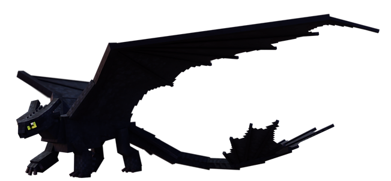
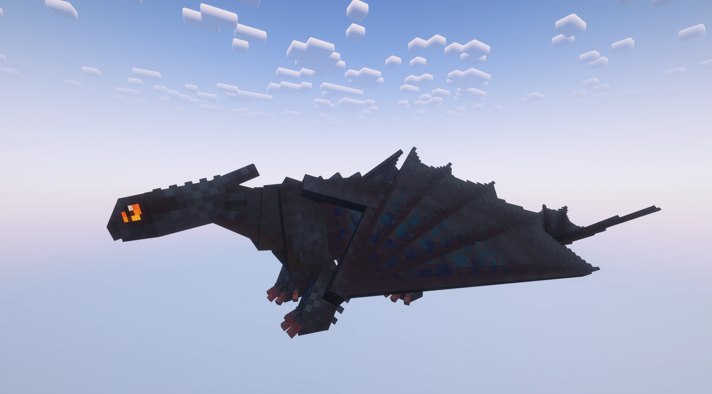
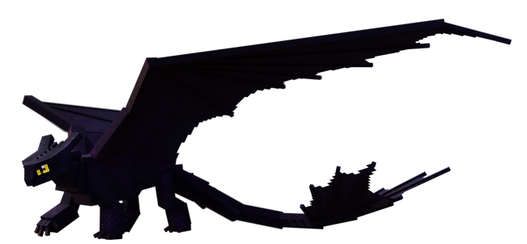
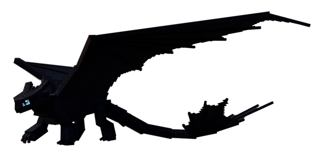
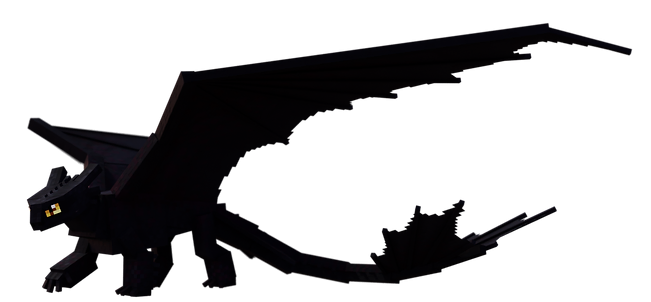
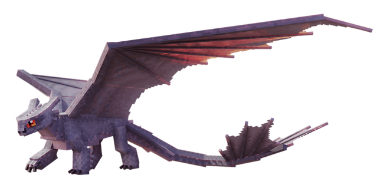

Night Fury
le Foudroyant invisibleDescription
§ 1Le plus rare et le plus intelligent des dragons de l'archipel.
Vol silencieux comme l'ombre, tirs plasma d'une précision chirurgicale. Sept variantes connues plus une cachée — renomme un Night Fury « Toothless » avec une étiquette de nom pour la révéler.
Depuis la session 35, les Night Furies sauvages ne spawnent plus que dans The End — refuge ultime où ils se sont réfugiés après la grande chasse.
Capacités
§ 2Plasma Blast
Tir d'énergie chargeable. Maintiens la touche pour charger jusqu'au niveau maximum — portée et dégâts augmentent. Munition : FuryBolt, traînée dorée 3 particules/tick.
Lightning Strike — Tempête Électrique
Invoque une tempête localisée autour du dragon. Éclairs aléatoires dans un rayon de 20 blocs. Distribution uniforme via sqrt(random) × R.
Apprivoisement
§ 3Tier IV — La potion sacrée.
Nourriture : Saumon, morue ou poisson tropical.
Conditions : Aucune armure ni arme · effet Vision nocturne actif.
- Trouve un Night Fury sauvage dans The End (très rare).
- Bois une potion de Vision nocturne.
- Approche sans armure, sans arme.
- Tiens du saumon/morue/poisson tropical et clic droit.
- Au seuil 100, l'apprivoisement réussit (1 chance sur 7 par interaction).
Reproduction
§ 4Croisé avec une Light Fury → Night Light.
Habitat
§ 5The End uniquement (depuis S35) : The End, End Highlands, End Midlands.
Spawn rate : 1 (Très rare — 1 max par groupe).
Variantes (5 + 1 cachée)
§ 6
Défaut
Night Fury
Forme standard

Variant 1
Sentinel
Noir charbon, le standard

Variant 2
Karma
Reflets pourpres

Variant 3
Arsian
Tons rougeâtres

Variant 4
Svartr
Noir profond, écailles bleutées

Variant 5
Albino
Spawnrate 1/1000 — d'une rareté absolue
.png)
Cachée
Toothless
Renomme via name tag « Toothless » — révèle la skin originale du film
Trivia
§ 7- Pour la capacité spéciale (tempête), il faut d'abord charger un plasma blast au niveau maximum.
- Croisé avec une Light Fury → Night Light (11 variantes).
- Spawn End-only depuis S35 — les anciens spawns des sommets enneigés ont été supprimés.
- Variante Albino spawnrate 1/1000.
Commande /summon
§ 8/summon isleofberk:night_fury ~ ~ ~ {variant:5}
Remplace 5 par le numéro de variante (1 à 8). Toothless : invoque une variante régulière puis renomme via name tag.